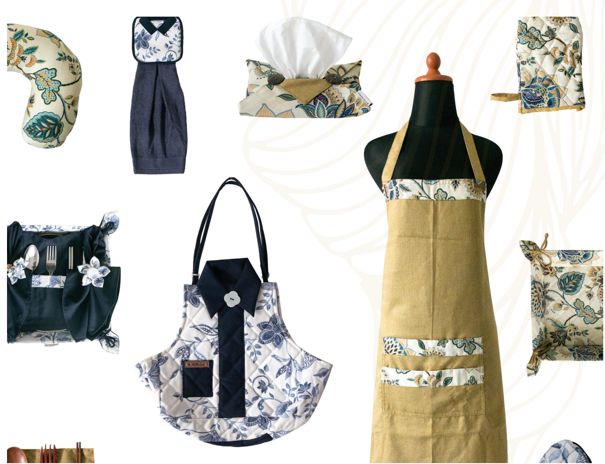

Oleh : PadiUMKM
Senin, 15 Mei 2023
Banyak orang mengatakan bahwa kesempatan tidak datang dua kali di kehidupan. Namun, pepatah tersebut dibantah dengan pengalaman Titin Dwi Isnaini, yang merupakan pemilik Allana Craft setelah usahanya mengikuti Bazar UMKM untuk Indonesia di Sarinah sebanyak dua kali. Allana lahir pada tahun 2008 karena kehobian Titin dalam merakit pernak pernik yang unik, yang dipicu dari banyaknya limbah kain yang tidak terpakai. Dari situ lah pengolahan limbah kain untuk diproduksi datang.
Di saat usaha lain memiliki nama brand karena menyesuaikan dengan produk yang ditawarkan, Titin justru menggunakan nama kedua anaknya, yaitu Aulia dan Maulana. Produk Allana 100% buatan tangan, seperti bantalan jarum, gantungan kunci, dan home living. Dengan membeli produk Allana, berarti ikut serta menyelamatkan lingkungan seraya menuangkan kreativitas. Atas berkembangnya gaya hidup terkini yang menuntut ketersediaan produk penunjang guna kehidupan yang lebih baik, Allana berkomitmen untuk bersinergi dan berkolaborasi dengan area sekitar. Salah satunya memberikan perhatian kepada perempuan terdekat untuk memasrahkan profesi.
Dengan mengusung tema hadir untuk menyempurnakan keharmonisan dan kehangatan setiap momen keluarga, Allana Craft berusaha menghadirkan produk home living dari kain berkualitas dan pengerjaan yang rapi melalui tangan-tangan terampil para pengrajin lokal, khususnya perempuan.
"Bisnis kami masih dalam skala mikro, namun kami memiliki harapan yang tinggi untuk terus memasuki pasar yang lebih besar dan berkomitmen terhadap pemberdayaan masyarakat dan peningkatan ekonomi di lingkungan kami, serta bertanggungjawab dengan misi menjaga lingkungan agar tetap terjaga dan lestari."
Siasat substansial yang dipijak untuk mewujudkan harapan Titin kepada Allana adalah mengikutsertakan diri pada Bazar UMKM untuk Indonesia yang digelar oleh Kementerian BUMN di Sarinah. Berperan serta sebanyak dua kali di acara ini, membalikkan fakta mereka untuk terus mengejar harapan kesuksesan di depan mata, terutama di pangsa pasar BUMN. Dengan membawa kisah kecintaan pada lingkungan, diharapkan bisa terus berkembang dan melebarkan sayap pada buyer group.
Keputusan yang tepat setelah Titin melibatkan diri sebanyak dua kali pada Bazar UMKM untuk Indonesia. Di bulan Februari, momen pertama kali ikut bazar, selama empat hari hanya menghasilkan 5,6 juta rupiah. Bukan angka yang kecil juga namun masih belum terbayarkan atas jerih payah dan kisah yang dilahirkan dari tahun 2008. Lalu pada April, sejarah terukir dalam sepanjang jalan Allana melaju, karena selama empat hari, terjadi transaksi sebanyak 175 juta rupiah. Bermula melihat adanya peluang dalam mengikuti bazar, menjadi kenyataan di kehidupan berbisnis Titin.